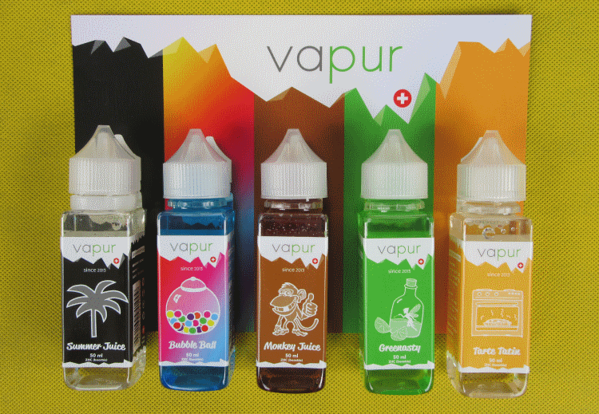

Interview – Vapur eLiquides (CH)
Das Tolle an der Schweiz ist ja u.a. die Mehrsprachigkeit und natürlich die entsprechenden Landesteile dazu. Ich konnte den Liquidhersteller von “Vapur Liquides”, Florian, für ein Interview gewinnen. Da sicher auch unsere Romands das Interview lesen möchten, habe ich es in beiden Sprachen verfasst:
La grande chose à propos de la Suisse est u.a. multilinguisme et, bien sûr, les parties pertinentes du pays. J’ai pu convaincre le fabricant de liquides “Vapur Liquides”, Florian, pour une interview. Puisque nos Romands veulent aussi lire l’interview, je l’ai écrit dans les deux langues:
Florian: Ich habe die Marke Vapur im 2013 gegründet.
VitaVapore: Wie bist Du darauf gekommen, eine Liquid-Linie herzustellen und die Firma zu gründen?
Florian: Zuerst habe ich Dutzende, ja sogar hunderte Aromen von aller Welt kommen lassen, dann deren Sicherheitserklärungen studiert, um eine erste Auswahl zu treffen. Zurückbehalten wurden nur die „sauberen“ Aromen, die ich dann alle versucht und untereinander verglichen habe, um die allerbesten herauszufinden. Jene, deren Geschmack und Beschreibung übereinstimmten. Beispielsweise ein Apfelaroma muss nach Äpfeln schmecken und nicht einer chemischen Süssigkeit. Mit der verbleibenden Auswahl habe ich dann “X” Misch-Versuche durchgeführt. Mischungen, die mir gefielen, Geschmäcker, die ich gerne esse… Die überzeugenden Resultate habe ich dann Dampfern zum Testen angeboten, um Anregungen zu erhalten, um das Ganze noch zu verbessern nach dem Motto: Ich stell die Liquids vor allem für die Leute, nicht für mich her. Nach abgeschlossenen Rezepturen wurden Etiketten kreiert, mit dem Abfüllen begonnen und der Verkauf gestartet. Vapur war geboren!
VitaVapore: Wie bist Du auf Dein Logo gekommen?
Florian: Das Logo war ursprünglich gar nicht für meine Liquid-Marke bestimmt. Anfang 2012 hatte ich einen Shop in Ecublens (Waadtland) gegründet, um elektronische Zigaretten zu verkaufen. Nach einiger Zeit habe ich einen Mitbewerber kennengelernt, der schnell ein Freund und Verbündeter wurde. Wir wollten uns zusammentun, um gemeinsam einen grösseren, schöneren und besser platzierten Shop aufzutun. Da habe ich den Namen „Vapur“ erfunden und mein Freund hat das Logo für den Laden kreiert. Schliesslich wurde aus dem Projekt nichts und so durfte ich Namen und Logo für meine Liquid-Marke verwenden.
VitaVapore: Wo produzierst Du Deine Liquid‘s?
Florian: Ganz zu Beginn produzierte ich im Hinterraum meines Ladens. Diese wenig hygienische Art, dies zu tun behagte mir nicht, da ich das gut Gemachte liebe. So habe ich mich dazu entschlossen, meinen E-Zigarettenladen zu verkaufen, um mir ein echtes Labor in Yverdon-les-Bains leisten zu können. Etwa anderthalb Jahre später begann man in der Schweiz von elektronischen Zigaretten zu sprechen. Meine Liquids wurden zu jener Zeit in etwa 20 Läden in der Schweiz und fast in 50 Läden im Ausland angeboten. Nach ungünstigen News in der Schweizer Presse sind die Verkäufe in der Schweiz gesunken. Im Ausland hat sich das Dampfen in Richtung Liquids mit Nikotin entwickelt, was ich in der Schweiz nicht produzieren durfte. Ich weigerte mich aber, in Frankreich zu produzieren, um diesem „Nikotin-Problem“ aus dem Weg zu gehen. Der Verkauf ist derart gesunken, dass ich nicht mehr davon leben konnte. So habe ich die Produktion eingestellt, mein Labor aufgegeben und das Lager in einigen Läden abverkauft. Letztes Jahr und dank der neuesten Marktentwicklung habe ich dann entschieden, meine Marke wieder neu zu starten. Heute werden meine Liquids in der Region von Lucens, in der Nähe meines Wohnorts hergestellt… Es wurde investiert in neue, effizientere, genauere und schnellere Geräte. Dies erlaubt mir heute in grosser Menge 60ml-Flaschen (oder 50ml geboostet), von höchster Qualität und Zuverlässigkeit zu produzieren, vergleichbar mit den grössten Herstellern.
VitaVapore: Von der Herstellung bis zum Versand, alles aus einer Hand oder hast Du Hilfe?
Florian: Einen grossen Teil der Arbeit mache ich selber. Alles was die Herstellung der Mischungen anbelangt mache ich alleine. Beim Abfüllen jedoch hilft mir meine Lebensgefährtin. Die eigens entwickelte Abfüllstrasse ist für zwei bis drei Personen ausgelegt. Auch wenn man alles alleine machen könnte, zu zweit ist man dreimal schneller. Beim Etikettieren wird ebenfalls kräftig mitgeholfen. Da die Flaschen rechteckig sind, muss dies von Hand geschehen, da meines Wissens, keine normal erschwingliche Maschine dies erledigen kann. Dies ist eine langwierige, sich wiederholende Aufgabe, die aber den Vorteil mit sich bringt, dass jede Flasche einer Qualitätskontrolle unterstellt ist, bevor sie auf den Markt kommt.
VitaVapore: Von wo beziehst Du Deine Zutaten für die Liquid’s?
Florian: Die Basen (Propylenglycol und das pflanzliche Glycerin) werden in der Schweiz hergestellt. Ich bin stolz darauf und halte fest an diesem Prinzip. Die Aromen kommen hauptsächlich aus der EU. Ein kleiner Teil stammt aus den USA, da ich keine ähnliche Qualität in der EU finden konnte oder dann zu Preisen, die das Produkt unverkäuflich machen würden…
VitaVapore: Welche Vorgaben bzw. Verordnungen musst Du bei der Herstellung Deiner Liquid‘s berücksichtigen?
Florian: Da die Liquids in der Schweiz nach wie vor der Gesetzgebung für Nahrungsmittel unterworfen sind, werden meine Produkte konform nach diesen Vorschriften hergestellt.
VitaVapore: Wieviele Liquidsorten gibt es aktuell?
Florian: Zur Zeit sind fünf Liquids verfügbar : Ein leichter Gourmand-Tee mit Frische-Effekt, ein Absinth-Zitrusfrucht-Gemisch, ein fruchtig-süsses und zwei wohlschmeckende Gourmandkompositionen.
VitaVapore: Wird es weitere Liquidsorten geben und was braucht es, um solch gute Geschmackssorten zu entwickeln?
Florian: Ich habe keine besondere Leitlinie. Ich kreiere was mir Lust und Freude bereitet, wann ich Lust dazu habe. Ich liebe die Vielfalt, passe mich also den Jahreszeiten aber prioritär der Nachfrage an… Nach mir braucht es vor allem Leidenschaft für das, was man tut, um gute Liquids herzustellen. Der tagtägliche Kontakt mit Dampfern hilft natürlich auch (ich arbeite im Bereich der elektronischen Zigaretten), um die Geschmackstendenzen über die Zeit hin zu verfolgen.
VitaVapore: Verkaufst Du Deine Liquid‘s nur innerhalb der Schweiz?
Florian: Vorderhand wurde die Marke nur in der Schweiz lanciert. Ich beabsichtige aber in absehbarer Zeit den Verkauf auf die EU auszuweiten. Bin ganz klar nicht abgeneigt, meine Produkte auch weltweit zu vertreiben, wenn sich die Gelegenheit dazu bieten würde… Mein neues Labor erlaubt es mir täglich etwa 1‘000 Stück 50ml oder 60ml Liquids herzustellen. Die Gelegenheit, diese Kapazität voll auszulasten, wäre ganz klar Top !
VitaVapore: Besuchst Du Dampfermessen in diesem Jahr? Wenn ja, welche?
Florian: Ja, ich habe einen Platz auf dem Stand meines Schweizer Vertreibers an der VapeCon in Biel erhalten. Dadurch konnte ein zahlreiches Publikum, aber auch viele Profis meine Marke entdecken oder wieder entdecken. Seither sind meine Liquids wieder in mehreren Läden präsent und weitere Verkaufspunkte sollten demnächst folgen. Ich freue mich, meine gesamte Produkte-Palette sehr bald flächendeckend und kundennah anbieten zu können.
VitaVapore: Du dampfst ja selber, wie bist Du zum Dampfen gekommen?
Florian: Ja klar, ich dampfe auch. Dies ist wichtig, um gute Liquids herzustellen. 🙂 Ich habe das Dampfen im 2011 entdeckt. Ich hatte einen Freund angetroffen, der ein „seltsames Ding“ im Mund hatte. Es ähnelte einer Zigarette, aber ich sah ihn, das Ding in seinen Hosensack verstauen, nachdem er daran gesaugt hatte. Ich habe ihn gefragt was das sei. Er hat es mich versuchen lassen und ich fand dies cool. Kaum Zuhause angekommen, habe ich mir ein solches bestellt. Einige Tage später hatte ich das Ding mit zur die Arbeit genommen, hatte aber meine Zigaretten zuhause vergessen. So habe ich meine E-Zigarette ausprobiert. Seither habe ich nie mehr eine Zigarette angerührt! – Es war der 28. Oktober 2011.
VitaVapore: Welche Hardware nutzt Du aktuell besonders gerne? Also Akkuträger und Verdampfer?
Florian: Heute dampfe ich auf dem neuen Verdampfer Innokin Zenith und eine Wismec Sinuous P80 Box. Was die praktische Seite anbelangt, verwende ich regelmässig die Vaporesso Nexus oder die Justfog Minifit. Zuhause dampfe ich zur Zeit eine E-Phoenix Key Box auf Harzbasis und einen Dripper E-Phoenix Resurrection V2. Ich liebe es aber sehr, mein Material zu wechseln, Neuheiten entdecken, usw… Jeden Monat kaufe ich 2 oder 3 Box und 1 oder 2 Dampfer. Dies erlaubt mir unter anderem, meine Liquids mit neuem Material zu testen, um mich damit zu vergewissern, dass meine Produkte auch den neuesten Tendenzen des Dampfens entsprechen.
Florian: J’ai créé la marque Vapur en 2013.
VitaVapore: Comment as-tu eu l’idée de produire une
ligne de liquides et de fonder ton entreprise?
Florian: J’ai commencé par commander des dizaines voire des centaines d’arômes différents un peu partout à travers le monde. J’ai lu attentivement les fiches de sécurité pour faire un premier tri, afin de n’utiliser que les arômes les plus “propres”. Après cela, je les ai goutés individuellement pour les comparer et ne choisir que les meilleurs, ceux dont le goût se rapproche le plus de la description. Par exemple, un arôme pomme doit avoir le goût d’une pomme, pas celui d’une espèce de bonbon chimique à la pomme. Une fois les arômes sélectionnés, j’ai commencé à faire des dizaines d’essais, des mélanges qui me donnaient envie, des choses que j’aime manger… Une fois les résultats convaincants, j’ai été dans des “vapéros” pour faire goûter mes liquides, avoir des remarques et faire les dernières améliorations. J’ai toujours dit que je faisais les liquides d’abord pour les gens, pas pour moi. Une fois les recettes verrouillées et les étiquettes crées, la mise en bouteilles a commencé et c’était parti pour la vente, Vapur était né !
VitaVapore: Comment as-tu trouvé ton logo?
Florian: À la base, mon logo n’était pas destiné à ma marque de liquides. Début 2012, j’ai ouvert un petit shop de cigarettes électroniques à Écublens (VD). Quelque temps après, j’ai fait la connaissance d’un concurrent qui est vite devenu un ami, un allié. Par la suite, nous voulions nous associer afin de créer un magasin plus grand, plus beau et mieux placé que ce que nous avions. J’ai trouvé le nom, “Vapur”, et il a créé le logo destiné au magasin. Mais pour finir, le projet ne s’est pas fait. J’ai donc repris ce nom et le logo pour lancer ma marque de liquides.
VitaVapore: Où produis-tu tes liquides?
Florian: Au tout début, je produisais dans l’arrière boutique de mon shop. Mais ce côté peu hygiénique ne me convenait pas, j’aime trop les choses bien faites. J’ai donc fait un choix, j’ai vendu mon entreprise d’e-cigarettes afin de pouvoir me payer un laboratoire à Yverdon-les-Bains. Environ 1 an et demi plus tard, on commençait à entendre parler de la cigarette électronique en Suisse. Mes liquides étaient, à ce moment là, vendus dans environ 20 magasins en Suisse et pas loin de 50 magasins à l’étranger. Des nouvelles peu favorables dans la presse Suisse ont eu pour conséquence que les ventes ont baissé en Suisse. A l’étranger, le développement de la vape a fait que les clients voulaient de plus en plus de liquides avec nicotine, ce que je ne pouvais pas produire en Suisse. Refusant de produire en France pour palier à ce “problème” de nicotine, j’ai vu mes ventes chuter jusqu’à un niveau qui ne me permettait plus d’en vivre. J’ai donc dû abandonner mon laboratoire et arrêter de produire. J’ai continué à vendre les stocks existants dans certains magasins en Suisse. Puis, l’année dernière, l’évolution du marché aidant, j’ai décidé de relancer ma marque. Aujourd’hui mes liquides sont produits dans la région de Lucens, proche de mon domicile… J’ai réinvesti dans du matériel flambant neuf, plus efficace et plus précis qu’à l’époque, ce qui me permet maintenant de produire en très grande quantité et avec des flacons de 60ml (ou 50ml boostés), d’une qualité et avec une régularité digne des plus grands fabricants.
VitaVapore: De la production à l’expédition, tout d’une seule main ou as-tu de l’aide?
Florian: Je fais une grande partie du travail moi-même. Tout ce qui est production des mélanges et brassage, je le fais tout seul. Mais pour l’embouteillage, je me fais aider par mon amie. La chaine d’embouteillage que j’ai conçue est faite pour 2 à 3 personnes. Bien qu’on puisse le faire tout seul, la rapidité de production est 3 fois plus rapide à deux. Elle m’aide aussi pour l’étiquetage des flacons car ceux-ci étant carrés, nous sommes obligés de le faire à la main, aucune machine à prix raisonnable ne sait le faire à ma connaissance. C’est un travail très long et répétitif mais cela nous donne un dernier contrôle sur la qualité avant la mise sur le marché, ce qui est très bien à mon sens.
VitaVapore: Depuis où fais-tu venir les ingrédients pour tes liquides?
Florian: Les bases (Propylène Glycol et Glycérine Végétale) sont fabriquées en Suisse, j’en suis fier et j’y tiens beaucoup. Quant aux arômes, ils viennent en majorité de l’Union Européenne. Une petite partie vient des USA car je n’ai pas trouvé de qualité équivalente dans l’UE, ou à des prix qui les rendent malheureusement inutilisables…`
VitaVapore: De quelles prescriptions, respectivement de quelle réglementation dois-tu tenir compte pour la production de tes liquides ?
Florian: Les liquides en Suisse étant pour l’instant toujours soumis à la législation sur les produits alimentaires, je produis conformément à ce qui est imposé dans ce cadre.
VitaVapore: Combien de liquides sont actuellement disponibles?
Florian: Actuellement, 5 liquides sont disponibles. La gamme actuelle se compose d’un liquide gourmand/frais au thé, un liquide à l’absinthe et agrumes, un fruité sucré et deux gourmands.
VitaVapore: Est-ce qu’il y aura d’autres sortes de liquides et que faut-il pour développer pareils goûts ?
Florian: Je ne suis pas une ligne directrice en particulier, je crée ce qui me fait envie, quand j’en ai envie. J’aime la variété, je fais donc en fonction des saisons, mais aussi et surtout, en fonction de la demande des consommateurs… D’après moi, ce qu’il faut pour créer de bons liquides, c’est avant tout être passionné par ce que l’on fait. Et le fait d’être tous les jours en contact avec des vapoteurs (je travaille dans le milieu des cigarettes électroniques) m’aide beaucoup à savoir comment les goûts évoluent à travers le temps.
VitaVapore: Vends-tu tes liquides uniquement en Suisse?
Florian: Pour l’instant, je n’ai relancé la marque qu’en Suisse. Mais je compte bien élargir les ventes au territoire Européen dans un avenir plus ou moins proche. Je ne suis évidemment pas contre l’idée de les vendre partout dans le monde si l’occasion devait se présenter… Mon nouveau laboratoire me permettant de produire environ 1’000 liquides de 50ml ou 60ml par jour, je ne demande que la possibilité de l’exploiter à son maximum !
VitaVapore: As-tu besoin de manifestations de vapotage cette année ? Si oui, lesquelles ?
Florian: Oui, j’ai eu un emplacement sur le stand de mon distributeur suisse au VapeCon à Bienne. Cela m’a permis de faire découvrir ou redécouvrir ma marque à beaucoup de monde et également aux professionnels. Grâce à cela, mes liquides sont maintenant à nouveau vendus dans plusieurs magasins et d’autres ne vont pas tarder à suivre. Je me réjouis de pouvoir proposer ma gamme proche de la clientèle sur l’ensemble du territoire très bientôt…
VitaVapore: Est-ce que tu vapes toi-même ? Comment es-tu arrivé à la vape?
Florian: Oui, bien sûr que je vape. C’est essentiel pour faire de bons liquides. 🙂 J’ai découvert la vape en 2011. J’ai croisé un ami qui avait un “truc bizarre” dans la bouche, ça ressemblait à une cigarette mais je l’ai vu la mettre dans sa poche après avoir tiré dessus. Je lui ai demandé ce que c’était, il me l’a fait essayer et j’ai trouvé ça cool. Dès que je suis rentré chez moi, j’en ai commandé une. Quelques jours après l’avoir reçue, je suis parti au travail et j’ai oublié mon paquet de cigarettes à la maison. J’avais justement mon e-cigarette sur moi, je me suis dit que j’allais essayer. Et je n’ai jamais retouché une cigarette ! C’était le 28 octobre 2011.
VitaVapore: Quels appareils préfères-tu utiliser actuellement ? Box et atomiseur?
Florian: Aujourd’hui, je vape sur le nouvel atomiseur Innokin Zenith et une box Wismec Sinuous P80. Et pour le côté pratique, j’utilise régulièrement la Vaporesso Nexus ou la Justfog Minifit. À la maison, je vape actuellement sur une box E-Phoenix The Key en résine et un dripper E-Phoenix Resurrection V2. Mais j’aime beaucoup changer de matériel, acheter des nouveautés, etc… J’achète 2 ou 3 box par mois, et 1 ou 2 atomiseurs. Cela me permet aussi de tester mes liquides avec le nouveau matériel, pour m’assurer qu’ils conviennent aussi bien à l’évolution de la vape.
Die Homepage ist sehr aufgeräumt und übersichtlich. Man findet sich zurecht, auch wenn man kein französisch spricht – und ja, ob französisch oder deutsch – die Liquids schmecken! Sie schmecken sehr gut und genau so, wie sie beschrieben sind. Da empfehle ich Florian, die Beschreibungen noch in deutscher Sprache anzufügen, was sicher für viele von uns hilfreich wäre, um sich für ein Liquid zu entscheiden. Aber natürlich, man kann auch alle Liquids kosten. Wichtig ist noch ein Hinweis, den ich von Florian bekommen habe: das Liquid “Greenasty” enthält u.a. Absinth. Das kann sich gerne oberhalb des eigentlichen Liquids ansetzen. Also zuerst Flasche schütteln und dann rein in den Verdampfer. Das ist also kein Fehler des Liquids.
Ich danke Florian für das Interview und der Hilfe für die Übersetzung und wünsche ihm weiterhin viel Erfolg mit seinen Liquidkreationen. Wer weiss, vielleicht ergibt sich bald eine Möglichkeit, seine Liquids in Deutschland zu kaufen.
La page d’accueil
est très propre et claire. Vous trouvez votre
chemin, même si vous ne parlez pas français – et oui, français ou
allemand – les Liquides ont un goût! Ils ont un
goût très bon et exactement comme ils sont décrits. Je recommande donc à Florian d’ajouter les descriptions en
allemand, ce qui serait certainement utile pour beaucoup d’entre nous
pour décider d’un liquide. Mais bien sûr, vous
pouvez également déguster tous les liquides.
Important est toujours un indice que j’ai obtenu de
Florian: le liquide “Greenasty” a u.a. Absinthe
dedans. Cela peut vouloir commencer au-dessus du liquide réel. Alors secouez d’abord la bouteille et ensuite dans
l’évaporateur. Donc, ce n’est pas une erreur du
liquide.
Je remercie Florian pour l’interview et l’aide à la traduction et lui souhaite un succès continu avec ses créations liquides. Qui sait, peut-être qu’il y aura bientôt une possibilité d’acheter ses liquides en Allemagne.

Kommentare: